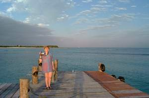

|
Ну вот, друзья мои, на сей раз не прошло даже полугода, как я исподобилась описать наше новогоднее путешествие в Мексику.
Нас давно манила идея отпраздновать Новый Год где-нибудь на юге, далеко на юге, чтобы зиму совсем ничто не напоминало.
Не то чтобы мы не любим зиму, - просто хотелось чего-нибудь необычного, не такого, как всегда. А всегда, - это снег и холодно.
Мечта сия родилась еще в Новосибирске, но тогда мы не подозревали, что съездить на юг зимой - это не так уж и необычно для населения
некоторых частей земного шара :).
Месяцев шесть до этого набрали мы с Андрюшей
в travel-агентствах
разнообразных журнальчиков и стали выбирать. Я, как будто бы самая
теплолюбивая персона в нашей семье (словно и не та вовсе, что всегда ставит кондиционер на максимальный холод), тяготела
преимущественно к тем местам, где пожарче, - 30 градусов и выше. Андрюша, как ни странно (словно он самый что ни на есть алкоголик),
отдавал предпочтение тем рессортам (что можно перевести, как дома отдыха, или, точнее, целые самостоятельные комплексы), где
подольше раздают бесплатный алкоголь :). Однако, когда мы пришли к нашему travel-агенту (в свою очередь, она, агент, справедливо нас
называет своими постоянными клиентами), то дело стало упираться все больше в цену. Там, где пожарче, конечно, хорошо, но и цены
там дороже. Мы, разумеется, принадлежим не к самому бедному классу канадского населения, но и не доросли еще до состояния, когда
можно выбирать место отдыха, совершенно не интересуясь цифирьками с ноликами :) (как наша агентша заметила, к подобному разряду
относятся в основном пенсионеры). Дело в том, что конкретно в Новый год все рессорты очень сильно дорожают, в полтора-два раза
(не мы одни оказались такими умными, придумав справлять Новый год в океане). Куда можно поехать летом без проблем, зимой уже
призадумаешься, -"где деньги, Зин?..". Естественно, не все рессорты стоят одинаково. Какие-то дороже, какие-то дешевле. Соответственно
имеющимся у нас в распоряжении средствам, Ольга, наш агент, порекомендовала нам Кубу или Мексику.
Вообще, работа у нее интересная. Представляете, посылают в командировку на недельку-другую в какой-либо рессорт, дабы ты там на
полную катушку отдохнул, а потом вынес строгое суждение: понравилось тебе там али нет :). То есть имеет смысл рекомендовать
клиентам или лучше съездить проверить другой рессорт.
В общем, Ольга обратила наше внимание на испанский рессорт в Мексике под названием
Barcello Maya.
Маленькое отступление. Добрые люди подсказали нам (правда, уже через некоторое время после возвращения из Мексики), что лучше
всего ездить в испанские рессорты. Там дескать и сервис лучше, и еда, и вообще, говорят, испанцы могут создать рай для
отдыхающих в самой что ни на есть нищенской глухой дыре, - даже, якобы, и не заметишь той дыры.
И это правда, надо сказать...
Из Канкунского аэропорта мы часа полтора
ехали на автобусе до нашего рессорта. Автобусы там централизованно
организованные, то есть тебя встречают в аэропорту и заботливо
рассаживают по местам. Не успевшим еще очухаться с дороги пассажирам
предлагают мексиканское пиво "Корона",
правда, пока за деньги
:). За время дороги мы с Андрюшей успели рассмотреть пролегающие
окрестности, и даже заснять оные на видео камеру. Окрестности
выглядят действительно не богато. Надо заметить, что основа этого
побережья - коралловые рифы, которые отличаются рыхлостью, а потому
время от времени в некоторых местах проваливаются, образуя
достаточно глубокие ямы. А между ям, посреди чистого поля иной раз
встречаются хижины.  Кривенький домик, соломенные крыши, развешенное
на солнышке бельишко, большая семья и отсутствие (во всяком случае,
визуальное) какого-либо подобия сортира. Сосредоточения населенных
пунктов представляют собой не намного более радужную картину.
Двухэтажные обшарпанные здания: аптеки, полицейские пункты, всякие
другие офисы. Все как-то так низенько, грязненько. Впрочем, другого
мы и не ожидали увидеть, - удивительно, но то же самое показывают и
в фильмах :). Кстати, среди встречающихся нам на пути машин самыми
"крутыми" были "жуки" (Фольсваген Битл), причем далеко не последней
модели.
Кривенький домик, соломенные крыши, развешенное
на солнышке бельишко, большая семья и отсутствие (во всяком случае,
визуальное) какого-либо подобия сортира. Сосредоточения населенных
пунктов представляют собой не намного более радужную картину.
Двухэтажные обшарпанные здания: аптеки, полицейские пункты, всякие
другие офисы. Все как-то так низенько, грязненько. Впрочем, другого
мы и не ожидали увидеть, - удивительно, но то же самое показывают и
в фильмах :). Кстати, среди встречающихся нам на пути машин самыми
"крутыми" были "жуки" (Фольсваген Битл), причем далеко не последней
модели.
Зато природа совершенно необычная. Повсюду
пальмы с кокосами, масса растений, о существовании которых я и не
предполагала раньше, цветущих, вьющихся, с абсолютно незнакомого
вида плодами. Джунгли мы имели счастие лицезреть еще с самолета.
Иной раз проезжали кактусы. Хотя, как утверждают, в том месте, где
мы отдыхали, их не очень много. В то время как на Кубе, например,
есть целые скопления просто громадных кактусов. Все, в общем,
другое. Когда мы приехали из Сибири в Канаду, мы не сильно заметили
разницу между растениями. Все как-то похоже, - во всяком случае,
выглядит похоже. И погодка еще та... :) (оказывается, пока мы
грелись под мексиканским солнышком, в Торонто был небывалый снежный
шторм, а потом мороз - 30 градусов. Ууух!). Мексика - совершенно
другое дело. Ничего общего ни с Канадой, ни с Сибирью :). Жаркое
солнце посреди зимы, синее небо, пальмы, океан...
Всю дорогу, пока мы ехали в автобусе, нас развлекало специально приставленное для этих целей лицо в виде коренного мексиканца
(о коренных мексиканцах чуть позже). Цели, правда, преследовались несколько другие, как-то: рассказать, что представляют собой
рессорты, в которые мы направляемся (далеко не все люди в нашем автобусе ехали туда же, куда и мы, - на побережье сосредоточено
множество комплексов и отелей, соответственно на протяжении всего маршрута народ то и дело выгружался то в одном месте, то в другом.
Правда, в наш рессорт ехало большинство!), каковы правила поведения на территории, что можно, что нельзя, что платно, что бесплатно.
Но излагалось все это дело на таком интересном английском, что люди приходили в восторг, включая самого оратора, который ко всему прочему
обладал еще и немалым чувством юмора. Таким образом, поначалу пришибленные дорогой туристы, к концу автобусного маршрута окончательно
расслабились и повеселели, влив в себя бутылки по 2 "Короны" :). А вначале действительно трудно было. Полет, конечно, недолгий, но смена
температуры просто выбивала из строя. Выходим из аэропорта города Канкун на свежий воздух и не можем вдохнуть (ибо воздух, как в русской
бане: жаркий и мокрый). А вылетели-то почти все из морозца, да еще ночью, когда обычно бывает намного холоднее, чем днем.
Туристские рессорты, разумеется, выглядят просто роскошно в сравнении с обычными мексиканскими зданиями. Бассейны, фонтаны, изощренная
растительность, скульптуры, куполочки, арки, охрана перед лобби (административного характера пункт на входе в рессорт) стоит. Прикольно,
наши охранники выглядели, как бойскауты: в шортиках с ремешками, такого же цвета рубашечках с короткими рукавами, только что без галстуков.
В лобби нас тут же зарегистрировали, выдали ключи от номера и... одели на нас желтые пластиковые браслеты. О боже! Это была, пожалуй,
единственная вещь в Мексике, которая доставляла нам неудобства. Дело в том, что снимать их нельзя, ибо потом не оденешь, а порвешь или
сломаешь, будешь платить. И всюду всегда, днем и ночью, ты обязан быть в этих браслетах. Это как бы знак твоей принадлежности к данному
рессорту. Видя браслет на твоей руке, тебя кормят, поят, обслуживают. А без браслета ты типа чужестранца, могут, видимо, даже спросить,
какими судьбами пробрался на территорию рессорта. Хотя... в барах, например, весь обслуживающий персонал уже знал нас в лицо, - я думаю,
и без браслета налили бы :). У некоторых людей, кстати, зеленые браслеты. Мы с Андрюшей после долгих наблюдений пришли к выводу, что их
путевки не включают в себя бесплатный алкоголь (бывают же непьющие люди, нафига им платить бабки за то, что они не будут использовать?).
А у детишек преимущественно синие браслетики, - тоже какие-то свои заморочки. Так вот... Горевали мы, горевали по поводу неизбежности вечно
носить эти браслеты, а потом решили, что не стоит оно этого. Ну, подумаешь, сексом заниматься неудобно :). Ну... цепляется за все. Ну и что?
Жизнь прекрасна! Слава Богу, что это не ошейники! :)
Слегка растекаясь под декабрьским :) мексиканским солнышком, мы плавно перенесли свои тела, облаченные в джинсы, шерстяные кофты и зимнюю
обувь, из лобби в отель (Андрей: зимняя обувь - это просто туфли :). В Торонто, конечно, бывает холодно, но это еще не повод, чтоб напяливать
на себя шубы, шапки и зимние сапоги, тем более практически ничего этого у меня просто нет :) ). Как хорошо, что
чемоданы уже уехали вперед нас!
Отель - это длинное-длинное 3-хэтажное строение (там таких штук 8) цвета чайной розы, которое снаружи ничего сверхособенного из себя не
представляет, но изнутри заставляет ощущать себя как-то таинственно. С одной стороны, архитектура весьма проста. С другой стороны, видимо,
как раз эта простота в сочетании цветом, каменистой шероховатостью стен и простором дают ощущение некоей тяжеловесности сооружения, даже
глобальности.
Дело в том, что в самой сердцевине отель совершенно пуст. На первом этаже там просто клумбы со скульптурами, а с верхних
этажей ты можешь созерцать те же клумбы, прогуливаясь по тянущимся вдоль боковых стен (собственно, по бокам как раз и расположены номера)
переходам, которые, в свою очередь, сообщаются между собой поперечными мостиками. Все очень просто и со вкусом. Никаких изысков, ничего
лишнего, вплоть до того, что даже общих дверей как таковых у отеля нет. Нет и окон, за исключением тех, что в номерах. (Без окошек, без
дверей, - полна горница людей :)) Вместо дверей - большие арки, вместо окон - огромные прорехи в стене, совершенно не предполагающие
застекленения. Живут же люди! Зима, понимаешь, на дворе, а у них сквозные дыры повсюду :). Всякий раз, когда мы проходили по этому коридору,
у меня возникала ассоциация с чем-то римским. Мне почему-то всегда казалось, что именно так и должны выглядеть исторические римские строения:
до безумия просто, немного тяжеловесно, но в то же время просторно и величественно. И каждый раз, когда мы достигали изнутри торца отеля
(дабы спуститься вниз), то самое место, где вместо стен открытое пространство, мне чудилось, что сейчас нам откроется вид на большую арену,
и взору представится бой гладиаторов... И мы, как гордые цезари, будем стоять вот прямо здесь и смотреть...
Взору, однако, представлялась не гладиаторская арена, а довольно-таки мирная картина, включающая театр, где по вечерам проходили
представления, столовую-ресторан, окруженную по периметру водой с фонтанами, лобби и много-много разных деревьев, преимущественно пальм.
А океан? - спросите вы. А океан открывался взору совсем с другого торца отеля, из номера, в котором нам с Андрюшей выпало счастие проживать.
Еще только зайдя в номер (в самый первый раз) мы тут же ринулись на балкон... и поняли, что нас не обманули, - нам действительно достался
номер с видом на океан. А таких номеров, признаться немного, ибо большинство комнат, как я уже говорила, сосредоточены по бокам длинных отелей
и окнами выходят на соседние здания. Так что нам повезло!
Океан, положим, располагался не прямо под носом. Как минимум, его отделял от нашего отеля пляж и небольшой парчок с пальмами. Помимо этого,
мы могли охватить взглядом красоты голубых фигурных бассейнов с фонтанами, бары, площадку, где под зажигательную мексиканскую музыку
зажигательные мексиканские дядички проводили аэробику для отдыхающих, и прочие другие фановые места.
Как мне захотелось ринуться в тот самый океан, одному только Богу известно! Но время близилось к обеду (там для завтрака, обеда и ужина
отводятся специальные часы), а есть, признаться, с прошлого ужина хотелось страшно. Мы быстренько достали из чемоданов первую попавшуюся
летнюю одежду (собственно, вся нелетняя одежда была на нас :)) и, переоблачившись, уселись на балкончике на плетеных креслах, задрав ноги
на столик и упершись взором в горизонт, коротая те несколько минут, отделявшие нас от обеда. Что сказать? Не верилось! Не верилось, что еще
совсем недавно мы были в заснеженном и морозном Торонто, мерзли в своих шерстяных кофтах, вылазя из машины, а теперь... - ЛЕТО!
И вот, по аккуратненькой дорожке, окруженной цветами, разнообразными вьющимися растениями и, традиционно, пальмами, мы направляемся к
обеденной зоне. В некоторых местах замечаем греющихся на солнышке игуан, которые, на самом деле, почти сливаются с окрасом природы.
Заметьте, на воле! Не в зоопарке. И надо же! они даже не бросаются на народ.
Питание организовано следующим образом. Берешь поднос, тарелку и... вперед! Наваливаешь себе все, что видишь. А видишь ой как много всего!
Причем, каждый новый день в меню преобладает та или иная национальная кухня. Но даже если ты и не любитель какой-то из кухонь, ты все равно
с избытком найдешь массу подходящих блюд, дабы удовлетворить свое чрево. Есть можно, сколько влезет. Если тебе что-то не по душе из того,
что ты выбрал, берешь новую тарелку и экспериментируешь с иного рода пищей :). Мы первые дни пребывания в рессорте наваливали с Андрюшей
столько разной еды, что сожрать все это дело было просто немыслимо, - просто очень хотелось как можно больше поперепробовать, окончательно
определиться в своих вкусах :). В общем-то, вкусно, по сути, все! Готовить они умеют! Под завязку обедни Андрюша напирал на дессерты, все
булочки с тортиками поперекусал :), а я, как правило, медленно дотягивала остатки винишка :).
Алкоголь - отдельная статья! Помните, Марина описывала в своем письме централизованное празднование Нового года в Торонто? Да, да, то
самое место, что алкоголь FREE - это не есть бесплатная раздача спиртного всем страждущим, но отсутствие оного вовсе. Так вот в нашем
рессорте алкоголь был действительно FREE. Краник с красным вином, с очень красным вином, с белым вином. Краник с темным пивом и светлым.
Бутылки с водкой и текилой. Пей - не хочу! Лишь бы выйти смог из столовой. А в день нашего прибытия еще и шампанское лилось рекой. Ведь
это было католическое Рождество. Я сначала было подумала, что шампанское входит в разряд обычных "краников". Вот так ничего себе, - подумала
я. А еще говорят, что с утра шампанское пьют аристократы и дегенераты. За кого же нас тут держат? :) Но потом оказалось, что его дают только
по праздникам. Так, на наш сезон пришлись рождество и Новый год. Но зато оставшийся список приведенных выше напитков можно потреблять прямо
с утреца :).
Соки там тоже делают классные. Причем, именно делают у тебя на глазах. Из всяких разных плодов: от апельсинов до бананов.
Собственно, кроме того, что ты сам накладываешь себе еду, во всем остальном эта столовая ничем не отличается от ресторана. Также бегают
официанты, подливают тебе водички, приносят-уносят столовые приборы, тарелки, могут даже поднести тебе алкоголя, если самому идти лень.
Столики сами по себе симпатичные очень: с синими или красными скатерками, белоснежные салфеточки. Да и просто находиться в том месте -
кайф. Музыка играет, бурлит фонтан под боком. Как-то все так уютно, весело, жизнерадостно, расслабляюще. Особенно приятно там посидеть
после купаний-загораний или на закате дня, когда все вокруг становится таким романтичным и загадочным (но об этом позже).
Вернемся к нашей первой рождественской обедне. Я, постепенно начиная верить в подарок судьбы, занесшей нас средь зимы на океанское
побережье, с лихвой приняла шампанского во здравие всех католиков, благодаря чему мой дух несказанно взбодрился, и я сгорала от
нетерпения поскорей окунуться в океан. А вот Андрюша, видно, от радости, что никуда больше не надо драйвить, высосал стакана 2 пива,
которых ему хватило, чтобы проникнуться равнодушием ко всему происходящему вокруг и, разморившись, отойти ко сну. Вы не представляете!
Моему негодованию не было конца! Мы только пришли обратно в номер (в котором, как я предполагала, мы шустро напялим купальные костюмы и
со всех ног ломанемся покорять просторы голубой бездны), как Андрюша, даже не сняв сандалий, упал на нашу king-size кровать и вырубился.
Я что было сил пыталась растребушить его, но в ответ он лишь улыбался мне сквозь сон... какой-то блаженно-туповатой улыбкой. Окончательно
потеряв надежду расшевелить это поистине мертвое тело, я стянула с несчастного "цезаря" сандалии и принялась распаковывать вещи. Спать я
не могла, - я была слишком перевозбуждена для этого. Организм требовал бурных действий, но идти купаться без Андрюши мне не хотелось, -
хотелось, чтобы мы вдвоем, одновременно, испытали то самое первое ощущение всеохватывающего счастья, когда будем входить в океан. Когда
распаковывать больше было нечего, я уселась на балконе размышлять о бытии, вселенском счастии и вселенской несправедливости, беспомощно
взирая на медленно склоняющееся к горизонту огненно-рыжее солнце...
Не найдя боле сил смотреть на сие душераздирающее зрелище, я возобновила попытки по оживлению трупа и... надо же! у меня получилось!!! :)
И последние лучи заходящего солнца мы встретили-таки в океане.
...Водичка прозрачная-прозрачная! Теплая-теплая! Я так даже хотела бы попрохладнее. (Но, правда, позже оценила все прелести теплой воды.)
Разноцветные рыбки снуют вокруг, крабики бродят, морские ежи иной раз заползают на песок. Медуз нет вообще! Почему я говорю - заползают
на песок? Потому-то изначально все подводное побережье пляжа было коралловым. Но так как скакать и плескаться на острых кораллах не совсем
удобно, то люди сочли нужным расчистить некую территорию возле пляжа и засыпать оную сплошным песком. По-моему, под песком там даже какая-то
пленка проложена, типа линолеума. Или просто мне это показалось, ибо уж очень мягкое дно получилось. Естественно, сей песчаный островок
невелик, лишь бы было где порезвиться детям. И если заплыть чуть подальше, то дно кардинально меняет свой вид. Там уже не постоишь босиком, -
остро. Кораллы, ракушки, какая-то колючая травка (может, это тоже разновидность кораллов?), масса рыб и морских ежей, - того и гляди, чтоб
не напороться. Поэтому в глубину люди заплывают, чтобы посНоркаться (ударение на второй слог, не путайте с другим словом :)), - что по русски
означает: поплавать в ластах и масках с трубками, - не отрывая взгляда от манящих морских таинств.
А когда, вдоволь накупавшись, выходишь на поверхность, то желательно подгадать, чтобы солнце в тот момент не было спрятано за тучки.
Хотя, я предполагаю, это совет для тех, кто стремится съездить в Мексику зимой. Ибо люди, побывавшие в этих местах летом, говорят, что
они, напротив, Бога молили, только бы он запрятал солнце куда подальше и дал немного ветерка и прохлады. В зимнее же время, когда облака
закрывают солнышко, становится не особенно уютно. Сразу, откуда ни возьмись, налетает сильный ветер, и у загорающих на лежаках даже
возникает желание чем-либо прикрыться :). Другой путь избавиться от холодка - нырнуть в воду. В Атлантическом океане вода всегда одинаково
теплая, независимо от времени года и времени суток. Вот именно в те несолнечные моменты я и оценила тепленькую водичку :). Но уж когда солнце
светит, то припекает что надо! Мы взяли с Андрюшей самый сильный солнцезащитный крем, и все равно обгорели. Не зря, видно, там столько
пальм, - специально торчат, чтобы бледнокожие канадские идиоты могли разложить под их листвой свои чувствительные покровы :).
И еще о солнце... Зимой в Мексике, как, впрочем, и повсюду, световой день не очень длинный. Плюс к этому на югах вообще световой день
короче, чем где бы то ни было. В наше время пребывания там солнце начинало клониться к закату уже в 5-м часу вечера. Казалось бы, чего проще?!
Лови утренние часы. - Утром солнце рано встает и ярко светит. Парадокс, но почему-то утром в зимней Мексике весьма прохладно, - гораздо
прохладнее, чем выглядит из окна :). То есть купаться, конечно, можно. И даже можно очень хорошо подзагореть. Но только вряд ли можно лежать
нагишом, не ощущая холода :). Жарко становится к 10-11 часам утра, как раз после завтрака. Мы с Андрюшей никогда бы и не узнали про это
(ибо по утрам крепко дрыхли), если бы пару раз не ездили на экскурсии, которые начинаются в 9 утра :). А так как все экскурсии включают в
себя также плавание, помимо любования красотами, то с раннего утра было довольно трудно в это поверить. Сидишь в лобби, ждешь автобуса,
руки в мурашках, ноги в мурашках, весь дрожишь. И желание искупаться - далеко не самое первое, что приходит тебе в голову. Однако, пока
доберешься до места, то уже в процессе осмотра достопримечательностей только и думаешь о воде. Вот такая противоречивая в Мексике зима! :)
На всякий случай дам совет насчет одежды (для тех, кто в море). Мы ехали в Мексику, зная о тамошней погоде из уст людей, посетивших ее летом.
Посему, следуя рекомендациям, взяли с собой только все самое легкое и без рукавов. Андрюше, правда, было проще. У него были летние брюки и
рубашки с короткими рукавами (хотя долгими зимними вечерами он с трепетом вспоминал о длинных). Мне было совсем тяжко. Летних брюк у меня
не было, за исключением шелковых, развевающихся на ветру и с разрезом. А из того, что с рукавами, имелись две прозрачные накидки по типу
халата, предназначенные для одевания поверх купальника, дабы не обгореть под нещадно пекущим солнцем :). Что вы думаете? Два вечера за нашу
неделю были настолько прохладными, что я напяливала эти накидки прямо поверх платья. Грели они мало, но сознание того, что есть рукава,
хоть как-то облегчало жизнь. К тому же радовало то, что я взяла с собой колготки :). Одежду, в которой я приехала из Торонто, одевать рука
не поднялась :). Хотя Андрюша несколько раз напоминал мне о ней (наверное, сам, хитрюля, хотел обрядиться). Все-таки Мексика... Как-то
хочется понаряднее. Видели мы там некоторых... в куртках. Так что, други мои, чтобы красота не требовала жертв, необходимо брать с собой
одежду на все случаи жизни. И совсем открытую, и совсем закрытую. Тоненькая легкая кофтенка мне бы там вовсе не помешала б :).
Все это ни в коем случае не значит, что вечера зимой в Мексике всегда холодные. Просто на наш недельный сезон выпало 2 таких. Ровно так же,
как 2 вечера были страшно теплыми. И ужасно душными. Так что даже хотелось снять с себя последнее и засунуть голову в холодильник. А вот
новогодняя ночка была просто прелестной. Я принципиально решила, что независимо от погоды буду справлять Новый год в том, что специально
привезла. Но погода не подвела меня. Тепло, не душно, легкий теплый ветерок. Кайф! Это была наша последняя ночь в Мексике...
Но не будем о грустном, то бишь о последнем. Расскажу я лучше вам о нашей второй ночи, когда высшая сила, по всем приметам, нечистая,
понесла меня купаться в океан... Как же так? - мыслила я, - побывать рядом с океаном и не искупаться ночью? Непорядок. И вот, миновав
все сияющие ночными огнями красоты парка (что перед нашим окном), мы приблизились к океану. Андрюша, не будь дураком, купаться вовсе не
собирался. Он взял с собою камеру, настроил ее на режим ночного видения, дабы лучше меня прослеживать в далеке от берега (словно как-то
мог меня спасти :)), и на том успокоился. Я же, сняв свою прозрачную накидку, ринулась в манящий своей таинственностью черный океан.
Океан действительно был черным. Почему-то в ночное время освещают все вокруг, кроме океана. Как будто его и нет вовсе. Только прилив волн
о нем напоминает. К тому же еще и знак вешают (желтый флажок), что на море, дескать, сейчас, - средняя степень опасности. И ночью он кажется
абсолютно диким местом. И ни души нет в округе. Когда я входила в воду, даже жутковато немного было. Представляете, одна! - на все побережие!
Внизу - шум волн. Вверху - только звезды. Низкие и яркие, как обычно бывают на юге, звезды... Я даже вспомнила далекую молодость, когда
увлекалась астрономией, и без труда нашла несколько созвездий.
Все было до сладострастия прекрасно! Казалось, только об этом всю жизнь и мечтала. Но! Какое-то тревожное чувство мучало меня. Я пыталась
сама себя успокоить. Одна, ночью, в воде, - ну и что? Мало что ли раз я была одна ночью в воде? В Обском море постоянно по ночам купалась...
Но там ведь было Обское водохранилище, а здесь... - настоящий Атлантический Океан! Как бы мимолетом пронеслась мысль об акулах... Но ведь я
спрашивала о них нашего агента, Ольгу, и она, шутя, ответила: специально для тебя, дескать, запустим :). Нет, акул здесь не может быть...
Для них было бы самым кайфом, самой обедней дневное время, когда тучи! тучи народа в море. Разве что, может, какие-то шальные заплывают
по ночам? Это, однако, не успокаивало :). Вроде бы все так прекрасно! Вокруг никого, лег на спину, качаешься на волнах и изучаешь яркие
прекрасные звезды!.. Но что-то жуткое, чуть ли не вся океанская природа со своей громадной душою закрадывалась в седце.
И вот, предавши волнам свое расслабленное тело, я вдруг чувствую нежное прикосновение к моей руке словно какой-то проскальзывающей мимо
ленты. И сразу после этого руку стало нещадно жечь. Странно, медуз здесь нет в принципе, водоросли тоже нигде не плавают, во всяком случае,
при свете дня. А если это какая-то рыба, то почему она просто не укусила меня, а вместо этого обожгла, причем с запозданием в ощущениях?
Мне стало совсем не по себе. Еще немного поплавав со жгучей болью в руке, я стала постепенно выходить на берег. И тут то же самое
происходит с моей ногой, только на сей раз нежная лента кажется раза в три шире. Вау, как больно! :( Держась за ногу и прихрамывая,
я двинулась к берегу более стремительно. При свете огней мы с Андрюшей увидели следы всего этого дела. Нежные прикосновения обернулись
множеством параллельных царапин как на руке, так и на ноге. Но ведь никто не царапал меня, это точно! Мы так и не узнали, что это было,
но царапины к концу следующего дня исчезли без следа. Все хорошо, что хорошо кончается, но в океан я больше по ночам не совалась :).
А в тот вечер я нашла свое спасение от жгучей боли в прохладной голубой воде бассейна. Бассейн ночью сильно отличается от ночного океана.
Ярко голубая вода подсвечивается и откуда-то изнутри, и снаружи, и от этого кажется даже посеребренной. А если еще учесть, что стволы
абсолютно всех пальм (а их там тысяча, наверное) обернуты гирляндами и в ночной темноте кажутся драгоценными сияющими колоннами, то
создается ощущение, что ты где-то в сказке, в волшебном замке природы. У меня было чувство, словно я - Алиса в стране чудес. До такой
степени все сверхъестественно! И тишина вокруг! Тишина! Лишь звуки цикад нарушают ее, и откуда-то издали доносятся приятные мексиканские
мелодии... Андрюша уже звал меня на берег, а я все плавала и плавала и никак не могла насладиться этой ночной сказкой.
Рядом с бассейном располагается бар. В то время суток он уже не работал, а при свете дня можно прям из бассейна заказывать себе что-нибудь
и, прям сидя в бассейне, попивать коктейль.
Как мы с Андрюшей заказывали коктейли на следующий день после прибытия, - это отдельная история. Началось все с того, что мы просто
лежали на пляже и загорали. Тут откуда ни возьмись появились мексиканцы в смешных рождественских колпаках и давай развлекать народ
игрищами. То нужно было распутать какой-то канат, то на лету поймать горизонтально падающую вниз палку. И тем, кто справлялся с задачей,
мексиканцы струйкой вливали в рот текилу, разбавленную какой-то красной сладкой гадостью. Причем жертвы они выбирали сами. Свистят и
указывают пальцем на кого-нибудь. Таким образом, припахали участвовать в своих затеях Андрюшу. Он без особых усилий словил палку, за
что нам влили в рот бухла (мне за компанию :)). После этого мы призадумались. Ведь народ-то сидит и чего-то попивает. Не пора ли и нам
приобщиться к этому занятному процессу? :)
Пошли на разведку в ближайший бар у бассейна. Сели за стойку, сидим и думаем, чего заказывать и надо ли за это платить. Смотрим,
люди вроде не платят ничего. Забирают коктейли и направляются к своим лежакам. Настала наша очередь. Я из названий коктейлей знала
только слово "Маргарита". И то это меня Марина просветила еще перед путешествием. Ее и заказала. Андрюша был вообще не в курсе и
по-простому... заказал пива. Сидим, пьем... Маргарита, конечно, классный коктейль, но Андрюше он не приглянулся, да и хотелось попробовать
того, что пьет большинство народу - нечто белоснежное, пенистое, красивое и нежное на вид. Допили, дальше сидим. К нам подходит бармен и
спрашивает: по второй, дескать? Еле успели сказать нет. Нам что-нибудь другое, - говорим и беспомощно смотрим на бармена.
Тут какой-то дядичка, из клиентов, видя наше замешательство, предложил заказать какую-то Пиноколаду. И бармен быстренько нам сварганил
по Пиноколаде. Вот эта вещь Андрюше понравилась! :) Коктейль действительно достойный! Сидим, блаженно потягиваем. Тенечек, рядом
бассейн, лафа,.. чего еще желать? Ан нет, по окончании коктейля мне захотелось еще чего-то. Необычного! Андрюшу-то вроде все удовлетворяло,
он заказал себе вторую порцию и этим радовался. Я же, имея непреодолимую тягу к экспериментированию, говорю бармену:
- Мне бы чего-нибудь с шоколадом, кофе, молоком и алкоголем.
- Ох! - обрадовался бармен, - Их есть у меня! Как раз то, что тебе надо! Кофейно-шоколадный ликер, молоко, текила! И называется
сей коктейль "Сомбреро"! :)
...Лучше бы я этот Сомбреро не заказывала. Во-первых, он ужасно сладкий, особенно для жаркой, солнечной погоды, -
я его еле допила маленькими глоточками. Во-вторых, он гораздо крепче всех других коктейлей, и у меня от него крыша поехала
капитально. В-общем, сомбреро - для более стойких парней :).
После обеда мы вновь пошли купаться, и нас опять потянуло испить коктейль. Подходим к стойке, и тут на тебе, напрочь забыли,
как называется тот замечательный белоснежный кокосовый коктейль. Бармен, запомнивший нас, хотел было уже мне налить Сомбреро,
но, заметив мою негативную реакцию, прислушался.
- Нам очень понравился коктейль ээ... э... Пи... Пи... Пикодолада.
- Ааааа... Пино Колада?
- Оно самое :).
На сей раз мы с Андрюшей придумали ассоциативный ряд, помогающий запомнить оное название. Пиноккио и колода. Так потом Андрюша и
говорил все время: А не выпить ли нам по карточному буратинке? :)
К концу сезона мы, разумеется, поперепробовали все возможные коктейли. И названия их помнили уже без всяких ассоциативных рядов.
Смешной случай был, когда меня вновь потянуло к экспериментам и я заказала коктейль (это, правда, уже было вечером в баре театра),
в котором бы присутствовали водка, текила и лимон. Бармен по-простому налил мне в стакан водки, текилы и бросил дольки лимона.
Я хлебнула это дело (которого было полстакана), и мои шары вылезли на лоб.
- А нельзя ли это горючее разбавить каким-нибудь джюсом (соком, то бишь)? - скромно попросила я.
- Конечно, можно, - ответил бармен и тоже запомнил меня, похоже, на всю оставшуюся жизнь, судя по тому, что когда на следующий
день мне в очередной раз приспичило распробовать текилу (я три раза пыталась ее распробовать, но всякий раз меня хватало ровно на полрюмки,
потому как гадость это, друзья мои, редкостная), этот бармен, загадочно улыбаясь, спросил:
- Тебе большой стакан или маленький?
- Мне очень маленький стакан, - ответила я, указывая на рюмку :).
Вот так мы и жили... Все там так живут. Вечно пьяные, сытые и довольные :). И что бы ты ни делал, купался бы, загорал, ездил на экскурсию,
сидел в лобби, смотрел представление в театре, ты ВСЕГДА пьяный, сытый и довольный :).
По вечерам, кстати, в том самом театре шли зрелищные, яркие представления. Зажигательные мексиканцы в ошеломляющих цветов костюмах исполняли
для зрителей песни и танцы. А танцуют они!.. Чертовски зажигательно!
Вообще, коренные мексиканцы, если кто не знает, - это южно-американские индейцы племени Майа. Внешне они всем, чем только можно, отличаются
от северо-американских индейцев. Например, наши, канадские индейцы, - очень красивы. Высокие, статные, с длинными черными волосами,
с характерным разрезом глаз, остро-рельефными чертами лица и гордым орлиным профилем. Мексиканские индейцы - все низкорослые, коренастые,
скорее темнокожие, чем краснокожие, почти все имеют довольно округлые черты лица и хитроватые глазки тоже характерного для индейцев Майа
разреза, который более близок к азиатскому, нежели к традиционному индейскому. Некоторые считают, что все эти мексиканцы похожи на
разбойников с дальней дороги :) или на пиратов.
После этой поездки я поняла, что во всех мексиканских сериалах, которые показывают/ли в России, главные роли играют далеко не настоящие
мексиканцы, но эмигранты - выходцы из Португалии, Испании, которые в большинстве своем выглядят весьма приятно. То есть реально они такие
же мексиканцы, как англичане и французы - канадцы, хотя и не в первом колене. Собственно, если кто и богат в Мексике, то это португальцы
и испанцы. А коренные мексы живут бедно, радуются каждому грошу, представляют собой в основном обслуживающий персонал и безумно счастливы,
если им выпадает работать в таких громадных туристических рессортах.
Попадались нам, правда, и очень красивые мексиканцы (я имею в виду индейцев). Например, от одного из барменов просто взгляд невозможно
было отвести, - такой красавец! Но по нему заметно было, что он не чистый индеец, - полукровка, видно :). Андрюша все ревновал меня к нему.
А я че? Я просто любовалась, как музейным экспонатом.
Собственно, я к тому все это начала, про внешность, дабы сказать, что когда они начинают танцевать, эти маленькие индейцы, когда их тела
выделывают казалось бы невозможные для человеческих тел вещи, когда они целиком сливаются с волнами музыки, словно растворяясь в ней,
они становятся прекрасны, восхитительны, необыкновенно красивы! И уж, конечно, незабываемы. Они просто гипнотизируют публику. Глядя на них,
невозможно спокойно сидеть на месте, хочется встать и пуститься в пляс. Искорками своих лукавых глазок они зажигают сердца людей, и, кажется,
способны заставить веселиться и радоваться всю планету...
Ну вот, наконец, я хочу перейти к описанию экскурсий. Тех двух экскурсий, которые мы с Андрюшей имели счастие посетить. Как бы так, по
общему согласию, или по ассоциациям, мы их назвали: домашней экскурсией и fancy экскурсией, или, другими словами, официальной что ли
экскурсией.
Почему первая экскурсия казалась домашней? Как-то было все по-простому, по-домашнему, уютно. Сели на вэн, всего-то было 5 человек, потом
еще присоединилась семья испанцев на своей машине. Лихо помчались куда-то в глубину джунглей. Высадились. Оказалось, направляемся к некоей
впадине прямо в глубине джунглей. То есть со стороны это выглядело, словно вертикальный, наполненный водой вход в пещерку. Ну а в самой
пещерке, в воде, где мы бултыхались, мы видели под собой глубокую впадину, метров 200, а над собой (то есть непосредственно над водой) -
без устали снующих летучих мышей. А, соответственно, на поверхности воды - их продукты жизнедеятельности :). Вода в этой впадине пресная и
холодная, образованная подземными реками. Что над водой, что под водой - сталактиты или сталагмиты (те, короче, что свисают вниз :)). Ощущения
прикольные, надо сказать. Всюду пещера. Когда ныряешь, даже жутковато как-то. Все время кажется, что вынернешь головой в камень или в острие
сталактита, или... в мышиные какашки :). Один момент был особенно прикольным. Наш инструктор, довольно-таки компанейский и домашний дядичка,
сказал группе, давайте, дескать за мной, и со знанием дела нырнул вниз. Андрюша смотрит на меня испуганными глазами. Он искренне думал, что
нам предстоит где-то в глубине, под сталактитами проплыть какой-то тунель и вынырнуть по другую сторону :). Я, честно говоря, тоже в глубине
души это подразумевала. Но я была без спасательного жилета, хотя предполагалось, что все должны быть одеты в оные. Успокойся, Андрюша, -
говорю я, - в жилетах нырнуть невозможно. Инструктор просто предлагает нам всем посмотреть, какая красота под нами кроется. На всякий случай,
я нырнула вслед за ним, но никакого тунеля, к счастью Андрюши, не обнаружила. А жаль,.. я уж было возомнила себя Джеймсом Бондом, покоряющем
подводные пещеры во имя долга :).
И вот настало время вылазить из пещеры. Вылазим... и не можем понять, то ли мы все еще не вылезли, то ли вылезли в какое-то совсем другое
место. Ибо одинаково мокро что в воде, что на поверхности. Оказалось, наш выход на берег ознаменовался тропическим дождем. Дождем, как стена,
как сплошной водопад, - и ничего вокруг не видно. Народ, однако, отыскал оставленную на поверхности одежду и ломанулся под навес. Поскольку
экскурсии в это место не редки, то их устроители потрудились соорудить неподалеку от впадины небольшой навесик (из тех же материалов,
что строят себе крыши), и даже туалет: настоящий унитаз, огороженный по периметру бамбуком, соломой или еще чем, рядом с унитазом рулон
туалетной бумаги (что в джунглях, прямо скажем, роскошь :)) и ведро с водой для смывания того самого унитаза :) (наполняемое, как видно,
по воле случая тропическими дождями).
Под навесом всей нашей небольшой и организованной толпе места хватило вдоволь. Инструктор раскрыл сопровождавший нас всю дорогу
холодильничек и изъял оттуда банки с пивом. Так что окончание тропического дождя мы провели в дружной и теплой обстановке,
разговаривая по душам, шутя и веселясь. А потом... вновь выглянуло яркое жгучее солнце, и, казалось, тропического ливня вовсе даже
и не бывало. И там, в джунглях, всегда так: то ливень, то солнцепек. Теперь я поняла, почему тропический воздух такой тяжелый: влажный,
теплый, душный воздух...
Нас предупредил инструктор, что могут быть обезьяны (про других диких животных он ничего не говорил). Но, к сожалению, ни одной обезьяны
мы не узрели, за исключением нас самих :). Наверное, все живности успели попрятаться от ливня в свои джунгельские жилища.
Пока телепали обратно к вэну, мало-мальски обсохли. И дальше мы направились к океану, где нас ожидал катер. Но перед восходом на катер,
на бережку, заботливый инструктор вновь обеспечил нас пивом с закусью, и уже опять пьяные, сытые и довольные, мы поплыли на некое волшебное
место в океане созерцать кораллы.
На месте назначения всем была отдана команда одевать обмундирование для снорканья. Предварительно, правда, нам популярно разъяснили правила
поведения за бортом. Кораллы, по возможности, не трогать и уж тем более, не ломать. А уже отломанные по воле судьбы куски оставлять там,
где увидели. Потому что все это - морские богатства, морские драгоценности, - и принадлежат они только ему, морю.
Я снарядилась быстрее всех и подумала, что вот, наконец-то я попробую сигануть за борт по-настоящему, так, как это делают водолазы по
телевизору. Села на бортик, улыбнулась окружающим (две тетички шутливо помахали мне ручками, после чего назад мне пути уж точно не было :))
и, сверкнув в воздухе ластами, кувыркнулась в воду спиной назад. Проплыла под катером, радостно выныриваю с другой стороны и замечаю,
что инструктор как-то на меня недобро смотрит. На самом деле, он очень добрый, веселый и классный мужик. И я ему, как чувствовала, нравилась.
Но тут он не на шутку перепугался и сразу после моего триумфального погружения стал спрашивать Андрюшу, хорошо ли я плаваю. Андрюша, видно,
его успокоил, - так что инструктор только пригрозил мне пальчиком и велел немедленно одеть жилет. Эту-то, ненавистную мне часть, касающуюся
правил поведения, я как раз и пропустила.
Реально, жилеты нужно одевать скорее не для того, чтоб не утонуть. Утонуть там трудно: плотная вода да и не глубоко. Вот как раз по причине
небольшой глубины и следует быть в жилетах. Просто если всякий будет расхаживать по дну, вороша ластами кораллы, а также нырять в глубь,
все подряд щупать и проверять на прочность, то впоследствии смотреть тут будет нечего. Так что меня не долго пришлось уламывать обрядиться
в жилет :).
Но какая все-таки красота там! Кораллы один красивее другого, один больше другого! На дне просто нет ровного места. Целые лабиринты из
кораллов, по которым мы с Андрюшей плавали. Некоторые из них чуть не достигают поверхности воды, некоторые уходят в глубь метра на 2-3.
Фиолетовые, синие, красные, зеленые, желтые - всех цветов и всех форм! Причем благодаря пронизывающим воду солнечным лучам, эти чудесные
создания блестят действительно как дорогие драгоценности, как бриллианты. А разноцветные сверкающие жемчужной чешуей рыбки (которых там
миллионы) составляют им достойную оправу.
Никогда не устаешь разглядывать сей подводный мир. С каждым новым метром картина полностью меняется и никогда не повторяется. Были там
кораллы весьма интересной формы. Точь-в-точь как человеческий мозг (во всяком случае, каким мы его видели на картинках :)), даже цвета
такого же, только увеличенный раз в 400. Но оно и понятно, ведь это мозг океана, самого огромного живого организма на планете.
...Вторая экскурсия начиналась странно. Сидим в лобби рано по-утру, ждем своего автобуса, взмерзли, як маугли. Предполагается, что к тебе
сами должны подойти и пригласить в автобус, потому как все экскурсанты у них в списках уже имеются. К нам же никто не подходит. Андрюша
с частотой в 10 минут бегал к охране и осведомлялся, когда и что. Ему все время отвечали, что дескать, ваш автобус еще в пути, пока,
наконец, не выдали, что он УЖЕ в пути :). Оказывается, нас по великой случайности, забыли внести в списки, посему никто и не волновался
по наши души. Мы, естественно, разгневанны, - встали, понимаешь, в такую рань, чуть от холода не окочурились, и ничего, главное, сделать
уже нельзя. Поезд ушел. Сколько было извинений! Омар, у которого мы заказывали экскурсии и которому платили деньги, названивает куда только
можно, ищет подобные же туры от других рессортов. Слава богу, на следующий день один из отелей организовывает такую же точно экскурсию,
только почему-то дороже. Но с нас дополнительных денег, конечно же, не берут, - как бы их прокол, их вина. Так что ждем до завтра...
Интересно, кстати, было наблюдать, что делал тот самый Омар с нашей кредитной карточкой, когда мы оплачивали тур. А, - говорит, -
пластик-фантастик! :) По уму, предполагается, что если нельзя на месте авторизовать карточку (нет модема, например), то ее нужно прокатить
на специальной машинке, в результате чего на листочках бумаги с копиркой (служащих потом чеком и его копией) пропечатываются номер карточки
и прочая необходимая информация. Затем ты расписываешься на чеке, забираешь копию и радостно шагаешь по жизни. Но что делать, когда нет даже
такой машинки? Все просто. Омар берет шариковую ручку и интенсивно катает ее по чекам, под которые подложена карточка.
- Что-то эта машинка плохо работает, - недоумевает Омар с неисчезающей улыбкой на лице, - Попробуем другую, - и лезет в шкаф стола
искать ручку более подходящую. Какой там пластик-фантастик! Фантастика - то, что они с этим пластиком делают :).
 На вторую экскурсию мы ехали не в вэне, но в
большом комфортабельном автобусе с высокими сидениями и столиками.
Первым делом направились разведывать археологическое место - город
Тулум - древний город индейцев племени Майа. Разведали его, правда,
уже до нас, и даже раскопали, а мы собственно только созерцали
творения рук человеческих, восхищаясь грандиозностью сооружений с
высокими широкими лестницами, большими колоннами и разного рода
картинками, выгравированными на камнях, из которых все и строилось.
Письменности, кстати, у индейцев Майа не было совсем. Видимо,
поэтому всю свою историю и предназначения храмов они пытались
запечатлеть в картинках.
Экскурсовода слушали мы, признаться,
невнимательно. Все больше носились вокруг и воспроизводили в цифрах
все достопримечательности: я - с фотоаппаратом, Андрюша - с камерой
:).
Тулум постепенно восходит в горку, и когда мы дошли до
последнего сооружения, самого огромного и величественного, то прямо
за ним обнаружили высокий, скалистый обрыв к морю и безбрежные,
нескончаемые просторы воды. Не дураки были эти майа, - построить
город рядом с такой красотой!
Там можно было фотографироваться
бесконечно, но впереди у нас была еще вторая часть путешествия -
поездка в парк Шел-Ха.
На вторую экскурсию мы ехали не в вэне, но в
большом комфортабельном автобусе с высокими сидениями и столиками.
Первым делом направились разведывать археологическое место - город
Тулум - древний город индейцев племени Майа. Разведали его, правда,
уже до нас, и даже раскопали, а мы собственно только созерцали
творения рук человеческих, восхищаясь грандиозностью сооружений с
высокими широкими лестницами, большими колоннами и разного рода
картинками, выгравированными на камнях, из которых все и строилось.
Письменности, кстати, у индейцев Майа не было совсем. Видимо,
поэтому всю свою историю и предназначения храмов они пытались
запечатлеть в картинках.
Экскурсовода слушали мы, признаться,
невнимательно. Все больше носились вокруг и воспроизводили в цифрах
все достопримечательности: я - с фотоаппаратом, Андрюша - с камерой
:).
Тулум постепенно восходит в горку, и когда мы дошли до
последнего сооружения, самого огромного и величественного, то прямо
за ним обнаружили высокий, скалистый обрыв к морю и безбрежные,
нескончаемые просторы воды. Не дураки были эти майа, - построить
город рядом с такой красотой!
Там можно было фотографироваться
бесконечно, но впереди у нас была еще вторая часть путешествия -
поездка в парк Шел-Ха.
 Это большущий парк, специально сотворенный для экскурсий со всех близлежащих рессортов. Слово "экскурсия", однако, в данном контексте
звучит слишком громко. Скорее сказать, это просто однодневное или полудневное (как у нас) путешествие в парк с целью отдыха. "Гвоздь"
парка - это змеевидный морской залив с многочисленными мостиками, в котором люди, как обычно, сноркаются или просто балдеют.
Вдоль залива
тянется масса ресторанчиков, баров, площадок для игр, лесочков с устрашающего размера и ядовитой окраски попугаями (которые почему-то всегда
безудержно вопят) и игуанами. В самом заливе есть специальные отсеки с дельфинами, с ними можно за дополнительную плату поплавать и поиграть.
Какие-то еще пещеры есть в том парке (до которых мы уже не успели добраться) и много всего другого.
Это большущий парк, специально сотворенный для экскурсий со всех близлежащих рессортов. Слово "экскурсия", однако, в данном контексте
звучит слишком громко. Скорее сказать, это просто однодневное или полудневное (как у нас) путешествие в парк с целью отдыха. "Гвоздь"
парка - это змеевидный морской залив с многочисленными мостиками, в котором люди, как обычно, сноркаются или просто балдеют.
Вдоль залива
тянется масса ресторанчиков, баров, площадок для игр, лесочков с устрашающего размера и ядовитой окраски попугаями (которые почему-то всегда
безудержно вопят) и игуанами. В самом заливе есть специальные отсеки с дельфинами, с ними можно за дополнительную плату поплавать и поиграть.
Какие-то еще пещеры есть в том парке (до которых мы уже не успели добраться) и много всего другого.
Еще в автобусе на нас одели по второму браслету (дабы служащие парка знали, что мы ни какие-нибудь левые) и повесили на шеи по маленькой
книжице со множеством различных купонов: бесплатное питание, бесплатная бухаловка, купон на обмундирование для снорканья и прочая
фигня (за полдня мы все не использовали :)). Правда, в ресторане, где мы поимели весьма приятный обед, и в барах никто с нас никаких купонов
не требовал, - без разговоров кормили и поили :).
Считай, что большую часть пребывания в парке Шел-Ха мы просноркались. Там, слава богу, надевать спасательный жилет никто не обязывал,
потому что, во-первых, никто прямой ответственности за тебя не несет, во-вторых, там достаточно глубоко (на дно нигде не встанешь и
кораллы не разрушишь), а в-третьих, там особо нечего кочевряжить ластами. То есть кораллы там, безусловно есть и много, но они не настолько
красивы, как мы видели, ныряя с катера. Да и вода, поскольку это залив, там мутновата. Но зато там очень неоднородное дно, которое временами
перерастает в целые пещерки, покрытые мягкими, как пух, кораллами (или это водоросли такие?). Вот уж где я оторвалась! Проплывала в
узких-узких ущельях, погружалась внутрь целых стай рыб. Почему-то при этом они не разбредались в испуге в разные стороны. То ли привыкли
уже к неадекватному поведению хомо-сапиенс, то ли принимают людей за тех же рыб, только побольше :). Некоторые стены пещерок были прямо у
поверхности воды, и я на них сидела-отдыхала, свесив ножки и торча по пояс из воды. Ведь мы в том заливе больше часа болтались, без жилета
можно и устать. А иной раз я просила Андрюшу подержать меня на ручках, дабы дух перевести немного.
Кроме "пушистых" лабиринтов, сей залив замечателен тем, что там очень много всякой разной живности. Например, плывем мы себе с Андрюшей
спокойненько, зырим в маски, дышим в трубки, и тут видим, как под нами проплывает огромных размеров рыбина. Реакция у нас была разной.
Я, чуть не захлебнувшись от страха, ломанулась в одну сторону, противоположную направлению рыбы, а Андрюша, наоборот, ринулся вслед за
гигантом, причем так быстро, как моторная лодка :). Мне пришлось срочно догонять его, думаю, совсем сдурел парень, - а вдруг она укусит его?
Но все обошлось :). Рыбе, видно, было далеко пофигу до Андрюши.
Но самое умунепостижимое было, что тронуло нас обоих до глубины души, это когда мы узрели под собой устрашающих размеров морскую черепаху!
Ростом с Андрюшу! Представьте только, расхаживает это чудище по дну, жрет огромной пастью песок... На панцире у ней удобно расположились
(прилегли отдохнуть :)) две здоровенные рыбины. Мы с Андрюшей, как заметили это чудо, сразу высунули бошки из воды и ошалелыми глазами друг
на друга смотрим, издавая в трубку возбужденные немые звуки :). Я, поскольку была без жилета и не имела трудностей с нырянием, отважилась
подплыть поближе к черепахе. Мне ужасно хотелось потрогать ее, дабы удостовериться, наверное, что это не мираж, но... мне стало страшно.
Она так широко разевала рот, так интенсивно перемалывала им песок, что я передумала. Такая громадина перекусит руку и глазом не моргнет.
Стала я всплывать вверх и вижу, что черепаха намеревается сделать то же самое. Похоже, как и у меня, у нее истощился кислород в легких.
И теперь мы с Андрюшей готовились наблюдать, что сейчас будет, НАД поверхностью воды. Зрелище было душераздирающим! Тронулась тихая
гладь воды, и из ее недр, как из озера Лохнесси, показалась огромная голова чудовища на змееподобной шее. Разверзши пасть, шире чем сама
голова, чудовище глотнуло воздух и вновь сокрылось в пучине морской. ...Могу сказать одно: если бы я увидела сию картину до того, как знала,
что приблизительно увижу, меня либо хватил бы инфаркт, и без жилета я б навеки пополнила ряды обитателей подводного мира, либо я установила
бы мировой рекорд по плаванию, сиганув от вынырнувшей бошки что есть мочи :).
Как бы там ни было, но эта подводная черепаха затмила почти все остальные наши впечатления от парка Шел-Ха. Хотя многие люди, будучи в парке,
это морское чудо не видели (ну не пришлось, не там сноркались), и у них все равно сохранились впечатления на всю оставшуюся жизнь.
Уже возвращаясь к автобусу, Андрюше вдруг приспичило сфотографировать меня возле попугая. Их там много обитает, как я уже говорила, но
все они как-то больше по лесочкам рассредоточены. А этот, чтоб его,.. блуждал в прямой досягаемости людей.
- Встань рядом с попугаем, - отчеканил Андрюша нетерпящим ослушания тоном.
- Я боюсь его, - восротивилась я.
- Что он тебе сделает? Даже маленькие дети фотографируются рядом с ним.
- А я боюсь. - Как назло, у этого именно попугая клюв был с половину его туловища, длинный, толстый и острый. - Боюсь я его кошмарно!
Да и не хочется мне что-то рядом с ним фотографироваться.
- Подойди к попугаю, я сказал, - произнес Андрюша с уже более сердитыми интонациями. (Чем-то мне это напомнило монолог Юрия Никулина:
типа взяли бревнышко, весело взяли бревнышко, с радостным смехом вприпрыжку понесли, понесли...)
Что делать? Стала я медленно, бочком и отрывистыми шажками придвигаться поближе к несносной птице, всем своим видом выражая страх и
презрение одновременно. Птица, видно, возымев аналогичные чувства к моей персоне, стала брезгливо воротить от меня свою убийственную
носару. А Андрюша, возлюбив нас обоих одинаково сильно, плюнул и заснял на фотоаппарат правду жизни :).
...Так, незаметно, проводя существование в праздности и весельи, мы вплотную подошли к Новому Году...
Андрей: Утром 31 Наташе пришла в голову идея поздравить родителей с Новым Годом - благо в России он к тому времени уже как раз наступал.
Она схватила телефон - не зря-же мы взяли с собой сотовые :), и принялась звонить. Можно было позвонить по гостиничному телефону, но уж
очень это дорого - дозвониться до Торонто $13/минута, а уж сколько в Россию - и представить сложно :) Поэтому мы специально взяли с
собой наши сотовые, тем более что я загодя позвонил в Роджерс (это провайдер сотовый) и узнал, что да, в Мексике наши телефоны должны
работать. Я не знаю, что подразумевалось под словом "работать" - то, что экран горел, и что телефон пытался набрать номер?! Потому что
ничего другого мы не добились :( Так наши родители и остались непоздравленными в новогоднюю ночь :(
(Да уж, это точно. Прикол в том, что я с этим телефоном носилась, где только можно. Высовывалась во все прорехи в отелевских стенах,
выходила на балконы, пыталась взобраться на крышу (жаль, что выход на нее был закрыт), вышла на улицу, звонила возле каждого столба, э...,
вернее, возле каждой пальмы :). Потом заприметила где-то вдали вышку и стала направляться с телефоном по направлению к ней. Вышла уже за
пределы рессорта, перешла через машинную дорогу, встала перед чистым полем , отгораживающим мой телефон от вышки, но все безрезультатно.
Вернулась в номер и позвонила на Андрюшин телефон, который был в 20-ти см от моего. Тоже попусту. Вроде телефоны работают, светятся,
куда-то даже звонят, но... никуда не попадают.)
В первую половину дня, 31-декабря, нас вдруг осенило, что мы еще не катались на си-ду (see-doo), водных мотоциклах. Было бы в высшей
мере непростительным для нас побывать в рессорте, где есть возможность на них погонять (потому что далеко не каждый рессорт предоставляет
подобные услуги, хотя и за дополнительную плату), и... не сделать этого.
Взяли 2 мотоцикла. Спросили, как ими управлять, приблизительно поняли и... - понеслись! В открытый океан! Управлять почти сразу же
научились. Нас предупредили, что если будем падать, то ключ из мотоцикла выдернется сам собой, по той простой причине, что он наглухо
привязан к руке. Но падать как-то не хотелось. Страшно было падать, хотя добиться этого проще простого. Можно сказать, что ты всю дорогу
только и стараешься, чтобы не упасть :). Ведь в океане - волны! Да не просто волны, а огромные волны! Мало того, что высокие, так еще и широкие,
метров 10. Таким образом, в каждый момент времени ты должен перемещать вес то в одну, то в другую сторону, дабы си-ду, или мотоцикл,
сохранял баланс. Но этому почему-то очень легко научиться, - словно ты родился для этого :). Хотя первые моменты я, как сейчас, помню.
Мертвой хваткой вцепилась в руль. Ногами что есть мочи уперлась в наклонную плоскость пола (как Жихарка в русской сказке), чтоб только не
вылететь из седла, глаза выпучила по полтиннику и несусь сломя голову. Не то, чтобы хочу попуще разогнаться. Просто газ на руле, - а в руль
я вцепилась намертво, совершенно не осознавая, поворачивается он в какую-либо из сторон или нет. :) Но спустя пару минут, контроль все-таки
возобладал над безрассудством, и все стало на свои места.
Нас также предостерегли, чтобы мы сохраняли взаимную дистанцию - метров 20, не меньше. Вот и нарезали мы круги с Андрюшей! Сначала
носились со всей мощью по прямой, с вершины одной волны перелетая на другую. Причем еще подгадать надо. Если твоя траектория
относительно волны не совпадает с касательной, то есть врюхиваешься между волнами, то волей-неволей следующая идущая на тебя
волна захлестывает с головой, мало того ты в этот момент замедляешься из-за встречного сопротивления и начинаешь трястись. Зато
когда летишь по гребням волн, - это сказка! Того и гляди, чтоб остаться при мотоцикле :). Ведь мощность велика, скорость велика,
и тебя, как ни старайся, сносит назад. Так и кажется, что ноги вместе с попой сейчас оторвутся от мотоцикла, и ты будешь лететь
вслед за ним, держась за руль :),.. если удержишься :). Уроки, даденные первыми мгновениями, оставались в силе на протяжении всего катания.
Сила нужна, немереная сила, чтобы устойчиво держаться за руль. Ну и ногами тоже неплохо получше упираться, чтоб не вынесло. Прямо скажем,
спинка к сидению напрашивалась сама собой, чтоб полегче было :). Но вместо этого, сзади было еще одно сидение - для пассажира. Прямо скажу,
пассажиром я бы не желала быть :). Потому что когда ты за рулем, и к тому же разгоняешься (будь то водный мотоцикл или просто машина),
то чувствуешь контроль. А пассажир, к сожалению, его не ощущает. И внутреннее состояние пассажира полностью зависит от степени доверия
к тебе, от твоих способностей управлять ситуацией.
Несмотря на опасность покинуть мотоцикл, искушение добавить скорости очень велико :). Ибо ощущения просто незабываемые! И ни с чем не
сравнимые! Это, как наркотик, наверное, - чем больше есть, тем больше хочется. Потом мы научились резко поворачивать. Сначала плавно
поворачивали, - потому что волны огромные и посему как-то жутковато. Как только ты встаешь повдоль волны, тебя того и гляди перевернуть
норовит. Балансировать телом приходится очень интенсивно. Однако, резко поворачивать оказалось даже более безопасным. Один момент, -
и ты опять поперек волн. И вновь летишь! Слегка касаясь их гребней. Кайф!!! :) И чем быстрее ты летишь, тем страшнее слететь с мотоцикла :).
Но тем и прекраснее!
В один момент я, правда, чуть не навернулась. Смотрю, у Андрюши сзади фонтанчик бьет. Еще какой-то дядичка промчался, - тоже с фонтанчиком.
Интересно, думаю, а у меня есть сзади фонтанчик? :) Почему-то я решила, что фонтанировать должно, если только попуще разгонишься.
Разогналась. Благо уже к берегу направлялись, на выход шли. И обернулась посередь дороги посмотреть, чего у меня там позади творится.
Фонтанчик я, конечно, увидела, но мама мия! Как давай мой си-ду ходуном ходить! Ведь бдительность-то я потеряла. Как давай я балансировать
из стороны в сторону! Но устояла! (гордо бия себя пяткой в грудь :).)
Всего-то 30 минут катались, а устали просто страшно. Когда едешь, сквозь шокирующую полноту чувств не замечаешь этого. А на бережку...
Кисти рук, словно не свои. Я уже не говорю, что было с нашими мышцами на следующий день :). Но это стоит того! Радости выше крыши!
Мне еще очень хотелось попробовать пролететь на парашюте за моторной лодкой (и такой сервис тоже имеется :)), но уже не было времени, -
так что в следующий раз. Я предполагаю, что ощущения должны быть, как у ястреба, кружащего над морем и высматривающего себе добычу в
его недрах. Вот только, углядев под собой рыбу, ястреб камнем падает в воду... Подобное завершение полета меня, признаться, мало прельщает :).
Да еще и с парашютом...
Вернувшись с обеда, мы обнаружили у себя в номере подарок от рессорта Barcello Maya - красивую бутыль текилы и две керамические памятные рюмки.
Было очень приятно, однако, мы почти в голос заявили друг другу, что текилой Новый Год отмечать однозначно не будем :), ибо все наше
отношение к ней выражалось весьма определенной крылатой фразой: "Какая гадость эта ваша заливная рыба!" :). Еще, конечно, не вечер, но
настораживало то, шампанское ни с утра, ни с обеда рекой не лилось, как это было в Рождество. Ну, поживем-увидим...
А на вечер, 31-го декабря, черт угораздил меня подать идею заказать ресторан. Дело в том, что помимо всеобщей харчевни, на территории
рессорта имеются также рестораны. И мы, например, отдыхавшие в Barcello Maya неделю, имели право 2 раза бесплатно посетить любые из них.
Чего теряться? - рассудит несведущий в этих делах человек. И на следующий же день после прибытия мы, не мешкаясь, забукали 2 вечера.
Люди! Будете отдыхать в подобных местах, не посещайте рестораны! Бог видит, воздвигнули их, исходя из одного-единственного принципа:
отдыхающим все должно приносить наслаждение и расслабление, и одним из путей достижения оных состояний, как считается в миру, является
ресторан, - стало быть, рестораны должны быть неотъемлемой составляющей рессортов. Однако, о том, каким должен быть ресторан, чтобы он
смог принести наслаждение, устроители наших судеб не призадумались.
Первый ресторан мы посетили где-то в середине недели. Располагался он как-раз возле нашего любимого пляжного бара и возле любимого
голубоглазого бассейна. Мы торжественно водрузились за столик.
Кстати, ресторанные столики - это особая статья. Если в общей обеденной зоне люди рассаживаются за столики исключительно своей теплой
компанией (мы, например, всегда садились за двухместные столики по периметру зала), то для ресторанов у них установлены особые лимиты.
Для скольки человек предназанчен столик (иначе говоря, сколько народу он сможет выдержать :)), столько за него и сажают.
То есть предполагалось, что мы будем ужинать с еще парой человек в обществе. Слава Богу, никого рядом с нами не оказалось, и мы
приступили к изучению меню. Люди! Если в обычной столовой вам предлагаются сотни видов съестного, в ресторанном репертуаре вы встретите
от силы 3 салата и столько же горячих блюд. Причем спиртное в точности то же самое, что течет из краников :). За то, что не из краников,
требуется платить отдельно. Фиг с ним, - заплатили, заказали, что Бог подал. Сидим, ждем...
Надо заметить, что еще и состояние моего здоровья в тот день было не самым лучшим. Почти все люди говорят, что, независимо от длительности
пребывания в мексиканских рессортах, один день или целые сутки страдают животом. Все дело в воде. Пить мексиканскую водопроводную воду,
точно так же, как полоскать ей рот, категорически нельзя (вода - это вторая вещь наряду с браслетами, которая мешала нам жить). Каждый
божий день нам в холодильник загружали по два 2-хлитровых бутыля с водой, которую мы пили и которую использовали для чистки зубов. Но,..
видно, достаточно того, что овощи и фрукты промываются водопроводной водой, ровно как, мы предполагаем, из нее изготовляют лед для коктейлей.
Это, кстати, одна из причин, почему в Мексике рекомендуется от случая к случаю потреблять алкоголь, типа последний хоть как-то дезинфицирует
организм. Считай, один коктейль - это полная компенсация льда алкоголем. Поэтому, помимо коктейлей, желательно принимать что-либо, исключающее
наличие льда: вино, пиво, водку, текилу...
В общем, мое состояние в ресторане можно было определить словом "отходняк" :). Уже неплохо, но все еще мутит. Всеми силами я пыталась
побороть в себе ощущение внутреннего дискомфорта и вернуться к радостям жизни (хотя бы чтобы доставить радость Андрюше). Но когда я случайно
обнаружила у себя под тарелкой огромного зеленого мотыля, я, как хамелеон, переняла окраску и, издавая жалобные утробные звуки, с
вытаращенными в ужасе глазами стала медленно сползать под стол :). Официант, почуяв неладное, быстро подбежал к нам, словил полотенцем
мотыля и пожелал счастливого ужина... ха-ха... Однако, бодрого состояния духа мне больше не удалось приобресть, и, быстро покончив с едой,
мы отправились в лобби догоняться коктейлями и наслаждаться зрелищами. Там каждый вечер выступали дядички в красивых костюмах: сами играли
на инструментах, сами же заливались соловьями на разные голоса и плюс к этому еще зажигательно приплясывали :). Вот там-то про все болезни
точно забываешь.
Кстати, лобби - совсем не подразумевает собой строгий административный пункт, как можно было, наверное, понять по моим предыдущим словам.
Лобби - это сердце рессорта! Все по вечерам, пока в театре еще не начались представления, прутся в лобби. Там бары, музыка, веселье,
там удобные мягкие кресла с диванчиками, удобные столики, фонтаны, там все рождественские и новогодние украшения, и там... рояль!
Который играет сам по себе! То есть в нужные моменты у него нажимаются нужные клавиши, и даже льется прелестная музыка, при всем при
том что никто за этим роялем не сидит! Чудо, - да и только! :)
Но вернемся к Новому Году. Мы искренне надеялись, что уж в Новый-то Год ресторан постарается на славу!
Ресторан, по выражению лиц его служащих, старался на славу, чему слабо соответствовали выражения лиц его посетителей. ...Начать с того,
что нарядных и несказанно веселых накануне праздника людей рассаживали по 10 человек за стол. При том, что все абсолютно не знают
друг друга и не горят желанием узнать. Ну окей, в любой обстановке нужно быть способным радоваться жизни, - решили мы с Андрюшей.
Все-таки Новый Год наступает! Перед каждым лежало меню. Открыли мы его и диву дались. Что заказывать? Каждое следующее блюдо в корне
отличается от предыдущего. Как в сказке "Алиса в стране чудес" становилось все страньше и страньше, так в нашем меню становилось все
слаще и слаще. То есть альтернатив не предполагалось. С трудом мы доперли, что это - непоколебимое "новогоднее" меню, то есть смена одних
и тех же для всех блюд будет происходить в один и тот же для всех момент. Окей, - успокаивали мы себя, - это еще не самое страшное в жизни.
Тем более что шампанского всем уже налили, - "значит, все не так уж плохо на сегодняшний день" :).
Первое блюдо из разряда холодных закусок представляло из себя малюсенький и прозрачный кусок красной рыбы с тремя черными икринками
наверху. Второе блюдо по размерам мало отличалось от первого. А третьей стадией обедни было уже горячее, проходящее в меню под громким
названием: бараньи ребра с картофелем. Короче, всем нам принесли по паре уже обглоданных кем-то ребер с тремя круглыми картошинками
рядом, габаритами чуть больше описанных выше трех икринок :). Обглодав то, что еще осталось на ребрах, народ с подозрением заглянул в меню.
Следующим пунктом шел щербет, - в узеньких махоньких стаканчиках. То есть основная еда уже завершилась. Рядом с нами сидела пара из
Германии. Мужчина в достаточно зрелом возрасте, хотя красивый и подтянутый, и девушка наших с Андрюшей лет. Мы малость разговорились с ней.
Она быстро вычислила, что мы русские, потому что сама она (зачем-то?) изучает русский язык. По-английски же она рразговаривала, как школьница:
тщательно с интонациями выговаривая каждое слово. Так вот, увидев перед носом щербет, немка издала возглас, вырвавшийся из глубины души:
- Как? Я все еще голодна?!!! :)
- Празднование сего Нового Года для всех нас предполагается быть диетическим, - процедила я сквозь зубы в ответ на ее крик души.
- Заметь, Наташенька, - философско-пофигистски произнес Андрюша, - это была твоя идея. И я тебя даже не гноблю. - И весело рассмеялся.
Он, похоже, первый понял, что нас всех ждет, и уже смирился с этим :).
...По залу пронеслись с мексиканскими напевами все те же дядички... А в окно, поскольку ресторан был при лобби, а лобби - при столовой,
мы могли созерцать радостные лица людей, удобно расположившихся в обеденной зоне и с аппетитом наяривающих праздничную еду разнообразных
видов. Причем, на все стулья были надеты белые торжественные чехлы, на столы постелены белые скатерти, а с потолка свисало бесчисленное
множество разноцветных шариков...
Когда, сменя щербет, нам принесли по кубическому сантиметру торта, я не выдержала:
- Пойдем, Андрюша, в театр. Там, наверное, уже началось новогоднее представление.
- Пойдем, - тут же согласился Андрюша.
Искренне пожелав счастья всем соседям по столу, мы направились к выходу. Немцы остались, все еще, видимо, надеясь, что смогут, наконец,
наесться :). На выходе нам выдали подарки: серебристую корону (которую я тотчас напялила на голову), звездный колпак (который Андрюша ни
за какие коврижки напяливать не согласился :)), две конусообразные свистульки и серпантин. Со всем этим добром мы вприпрыжку понеслись к
театру. Благо, животы были пусты, - так что бежать было легко :). У театра, так же как и внутри, разгоралось веселье. Всем раздавали бокалы
с шампанским. На сцене шло красочное представление. Все те ощущения, которыми я делилась по поводу мексиканских танцев, были получены здесь,
в театре. Иной раз, правда, там проходили и другие представления: различные конкурсы, имитации и прочее. Но всегда это заканчивалось танцами.
В канун Нового Года представление было особенно ярким и особенно зажигательным. Усидеть на месте было нельзя. Народ менял бокал за бокалом
и приходил во все более соответствующее обстановке расположение духа. Наконец, пошел отсчет секунд до полуночи. Считали все вместе, дружно
выкрикивая цифры и все выше и выше подымая бокалы с шампанским. И вот оно! Свершилось! Все закричали, захлопали в ладоши, задудели в
подарочные свистульки, принялись друг друга поздравлять!... А потом... всех пригласили на сцену - танцевать! Все, разумеется, не вошли.
Масса народу плясала в проходах, некоторые вообще пошли бродить по романтически-сияющему ночному рессорту. Но мы с Андрюшей обосновали
место прямо возле оркестра. И плясали до упаду, до изнеможения! Без инцидентов, однако, не обошлось. Некая тетичка, разойдясь в танце на
полную катушку, умудрилась скакнуть своим острым каблуком мне на ногу. И в первый момент я, разумеется, осветила весь театральный зал искрами,
сыплющимися из моих глаз, сменив декорации полнейшей темнотой :). Очнувшись и чуть отойдя от пронизывающей боли, я всеми силами постаралась
отогнать ее прочь (все-таки Новый Год на дворе!!!) и продолжала плясать как ни в чем не бывало. Время от времени мы наведывались в те места в зале, где оставили подарки и коктейли (шампанское к тому времени уже кончилось), подкреплялись (на голодный-то
желудок :)), чуток отдыхали и вновь бросались в танцевальный круговорот. Этот оркестр, - еще те паразиты, - играли все шедевры подряд: и
мексиканские песни, и рок-н-роллы, и танго, - так что очень трудно было оставить сцену, дабы минуту-другую передохнуть.
Хотелось все и сразу! :)
...Еле тащась посередь глубокой ночи, чуть не падая от усталости, мы, наконец, достигли номера и тут же вырубились. По дороге мы даже,
честно говоря, были рады тому, что посетили сей бедный на пищу ресторан. Не пойди мы туда, наевшись до отвалу в столовой, - и, наверное,
уже не смогли бы так резво отплясывать.
А первого нам предстояло уезжать. Долго спать было некогда. Нужно было срочно собирать вещи и выветриваться из гостиницы. Реально, автобус
в аэропорт был только в 5 часов вечера, но выселиться из номера требовалось до полудня. Составив вещи в лобби перед охраной, мы отправились
к океану - урвать последний кайф уходящей для нас мексиканской зимы :).
У нас еще оставалось по купону на снорканье, то бишь на бесплатную выдачу нам соответствующего обмундирования. Также неиспользованными
оказались и купоны на уроки по дайвингу. Дайвинг - это плавание с аквалангом. Но уроки аквалангистов проходят в бассейне. Мы видели это, -
ничего интересного. На людей просто вешают акваланги, суют им трубку в рот и заставляют погружаться в бассейн (приседать, иначе говоря) и
дышать там. И лишь потом только выпускают в море. Таким образом, даже если бы мы взяли напоследок уроки, выйти в открытый океан для нас уже
не представлялось возможным (по причине окончания срока пребывания).
Посему мы выбрали снорклинг. Прикольно было, когда заполняли документ на получение снаряжения, - дату ставили 01/01/01 :). Не каждому удается
прожить такую дату. С удивлением обнаружили, что маски в нашем рессорте выдают самые удобные из тех, что мы использовали за время отдыха.
Даже почти не чувствуешь маску. Все предыдущие были страшно болезненными, - губа от них заворачивалась до самого носа. И я, со своим
маленьким ротиком, их тихо ненавидела. Зачастую я игнорировала трубку (оставив от нее только маску), так же как и жилет, и мне было гораздо
проще, набрав в легкие воздуха, нырять, а потом вновь набирать воздуха и опять нырять :). Эта же маска была чудом! Мне так хотелось забрать
ее с собой :). Зато ласты явно пытались скомпенсировать приятные ощущения, полученные от маски. Выгнуты неестественно назад, - поэтому
выворачивали ноги. Это, однако, не помешало нам проболтаться в воде час с лишним. Оказалось, что в районе мостика-пристани, чуть поодаль
от пляжа, располагаются сногсшибательные кораллы. Они, может быть, не столь красивы, как мы видели во время первой экскурсии (то вообще
были произведения искусства), но впечатляют достаточно! Еще ветер поднялся сильный в тот день, так что море баловало нас волнами. В
результате мы получали два аттракциона одновременно: созерцаешь кораллы и качаешься на волнах. Правда, когда ты не можешь с ними справиться
и прибиваешься морской стихией вплотную к острым кораллам, приятного мало, но в целом снорканье удалось на славу :).
Андрюша рассказал, что когда проплывал под мосточком, заслышал русскую речь и увидел перед собой две пары свисающих с него ног: волосатые
мужские и детские. Папаша обращал внимание ребенка на огромные тучи то и дело снующих под мостом рыб. И тут вместе с очередной стаей,
прямо из-под ног говорящих, выплывает Андрюша.
- О! А вот и акула! - воскликнул папаша :).

Сноркаясь в округе мостика-пристани, мы первый раз обнаружили ее предназначение. На наших глазах к пристани пристал большой катер, и из
него начали выгружаться аквалангисты, рассортировывая свое обмундирование. Аквалангисты - это те же люди из нашего рессорта, которым,
наконец, удалось выбраться в открытое море. Я забыла про кораллы, высунула бошку и застыла на месте (хотя и без жилета :)). Смотрела на них
с тоской и завистью. Андрюша, завидев такое дело, принялся меня утешать. Дескать, люди, которые плавали с аквалангами, утверждают, что
ничего особо интересного в этом нет, что снорканье, мол, гораздо прикольнее. ...Может, кому-то и легко поверить в это. Но ваш-то покорный
слуга, не мыслящий существования без воды, ненавидящий спасательные жилеты из-за невозможности нырять, имеющий разряд по плаванию и, наконец,
рожденный Водолеем! - полжизни готов отдать, чтобы хоть на минуту погрузиться на дно морское, на НАСТОЯЩЕЕ дно, чтобы только увидеть все
в своем девственно-чистом великолепии, в своей натуральной красе, чтобы взглянуть в глаза обитателей этого поистине прекрасного, огромного,
сверхразумного, таинственного и никем не изведанного мира... У меня даже в детстве любимая сказка была - "Русалочка". И я, как сейчас помню,
бабу свою, наверное, замучила, вынуждая водить меня на сей фильм в кинотеатр с частотой раз в месяц :). Русалочка страстно желала, чтоб у нее
были ноги вместо хвоста, чтобы она могла танцевать на суше и любить, как любят люди. Я же, напротив, мечтала о хвосте. О ярком, переливающемся
жемчужинами в лучах солнца хвосте. Чтобы я всегда могла жить в море. И чтобы любила его больше всего на свете...
Все это как-то само собой пронеслось в моей памяти, когда я смотрела на разгружающихся аквалангистов, действующих сноровисто, быстро,
со знанием дела и... без малейшего выражения мечты на лице... С мыслью, что у меня еще есть к чему стремиться в будущем, я вернулась
к снорканью. После часа с лишним болтания на волнах конечности мои стали неметь: то ли от холода, то ли от усталости, то ли от чувства
чего-то потерянного (типа дайвинга :)) а, скорее всего, от недосыпу (ведь встали-то мы рано, несмотря на бурно проведенную новогоднюю ночь).
Посему мы покончили со снорканьем, приняли освежающий холодный душ на пляже и мокрые отправились на обед - последний обед в Barcello Maya.
Одежда наша покоилась в чемоданах, а искать место для переодевания было некогда, - обеденное время близилось уже к концу.
Потом нам все же выделили комнату. Предполагалось, что мы ее займем на полчаса, переодеваясь, моясь и причесываясь с чувством, с толком,
с расстановкой. Но все выделенное нам время мы, считай, проплавали :), поэтому в порядок приводили себя по-солдатски, за 5 минут. Успели
даже завязать шнурки на туфлях, в которых прибыли из Торонто :).
И оставшиеся часы мы провели в лобби на диванчике. С одной стороны, на душе было грустно. Грустно покидать все это: океан, пальмы, беззаботную
жизнь и просто лето. С другой стороны, ничего уже не хотелось, кроме как домой. Мы настраивались провести в Мексике одну неделю, и в общем-то
ее нам хватило, несмотря на страсти по парашюту с аквалангом :). Если бы мы ехали на 2 недели, нам бы хватило 2-х недель. Так всегда бывает. -
Хватает столько, насколько настраиваешься.
Купили барселломаевские морские картишки и за ожиданием автобуса лениво перекидывались в них, по очереди наведываясь в бар за любимой
Пино Коладой :). Бармены всех отдыхающих знают в лицо, знают уже, кто что любит, кому что предложить. И нас посещали мысли о том, что вот,
они знают нас, но мы сейчас уедем, прибудут новые люди, и бармены будут знать их. И так тысячи, миллионы человек. Ничто не вечно под Луной,
и в то же время - вечно... Омар пришел попрощаться с нами, тот самый, что пластик-фантастик :). А потом подъехал автобус, загрузил нас
вместе с барахлом и... повез в аэропорт.
Андрей: Снова о подлых телефонах - уже в Пирсоне (аэропорт в Торонто) когда мы шли по трубе из самолета - оба наших телефона одновременно
весело заверещали, оповещая, что они резво наполучали разнообразные е-мэйлы, голосовые и текстовые сообщения... (Наташа: новогодние
поздравления от наших сестер, которым мы заведомо дали телефонные е-мэйлы.) У меня мелькнула мысль, что можно ради развлечения позвонить в
Роджерс, и упрекнуть их за отсутствие сервиса в Мексике, но мысль о том, что мы вернулись домой как-то быстро развеяла всякие желания
портить настроение людям и себе :)
Через 15 минут мы уже сидели в своей машине (не слишком-то и холодной, поскольку ее заранее завели и прогрели перед нашим приходом), и
рулили по знакомым хайвеям домой.
(Наташа: Чтобы вы не подумали, что мы застукали воров на месте преступления :), разъясню подробнее. Дело в том, что мы сдали нашу машину в
закрытый паркинг. И у них там имеется определнный сервис. Когда мы ехали в аэропорт, то просто оставили машину вместе с ключами перед
входом в здание паркинга. Без нашего участия ее быстро увезли куда следует, куда-то внутрь. Потом подъехал к паркингу шатл (специальный
автобусик) и, загрузив нас с вещами, довез до нужного терминала в аэропорту. Возвращаясь обратно, мы, еще едучи в приземлившемся самолете,
позвонили в сервис, и к нашему прибытию (на том же шатле) машину уже вывезли из паркинга, завели и нагрели. Она даже не была в снегу, в то
время как тем, кто оставляет машины на открытом паркинге, приходится посреди ночи интенсивно шуршать щеточкой, дабы откопать свое
четерехколесное детище из-под снега :).)
В свою квартиру мы зашли ровно в 3 часа ночи. Ровно в это же время неделю назад мы из нее выехали.
И... да здравствует снежный Торонто?! :)
Следующее
письмо- Письмо
17
|


{kind=link}
{kind=link}
{kind=link}
{kind=link}
{kind=link}
{kind=link}
{kind=link}
{kind=link}
{kind=link}
{kind=link}
{kind=link}
{kind=link}
{kind=link}
{kind=link}
{kind=link}